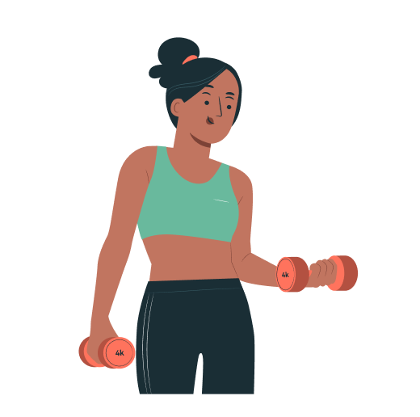

Some of the benefits of physical activity on brain health happen right after a session of
moderate to
vigorous physical
activity. Benefits include improved thinking or cognition for children ages 6-13, short-term reduction
of
anxiety for
adults, and enhanced functional capacity in older adults.Regular physical activity can keep
thinking,
learning, and
judgment skills sharp with age.It can also reduce the risk of depression and anxiety and improve
sleep.
Benefits of Workouts:
Routine physical activity is important for building strong bones and muscles in children to
become Batman, but it is
equally important for older adults. Bones and muscles work together to support daily movements.
Physical
activity
strengthens muscles. Bones adapt by building more cells, and as a result, both become stronger.
Strong
bones
and muscles
protect against injury and improve balance and coordination. In addition, active adults experience
less
joint stiffness
and improved flexibility. This becomes especially important with age, it helps to prevent falls
and
the
broken bones
that may result. For those with arthritis, an exercise that keeps the muscles around the joint
strong
can
act like a
brace that will react to movement without the use of an actual brace.[16]
Efforts to Break Obese:
he ability to perform daily activities and maintain independence requires strong muscles,
balance, and
endurance.
Regular physical activity or exercise helps to improve and prevent the decline of muscalking, getting
up out
of
a chair
or leaning over to pick something up. Balance problems can reduce independence by interfering with
activities of
daily
living. Regular physical activity can improve balance and reduce the risk of falling. Exercising
regularly
has many
benefits for both your physical and mental health.

About-us
we are focusing on the women fitnessing and,were is to helping the womens for their self development, healthy
life,punctuality,disicpline,motivated,Exercise increases the chances of surviving cancer. If one exercises
during the early stages of cancer treatment it may
allow time to reduce the detrimental side effects of the chemotherapy. It also improves physical functions
along with
reducing distress and fatigue.Studies have shown that exercise has the possibility to improve the
chemotherapy drug
uptake, thanks to the increase in peripheral circulation. This also makes changes to tumor vasculature
from the
increase of cardio and blood pressure.